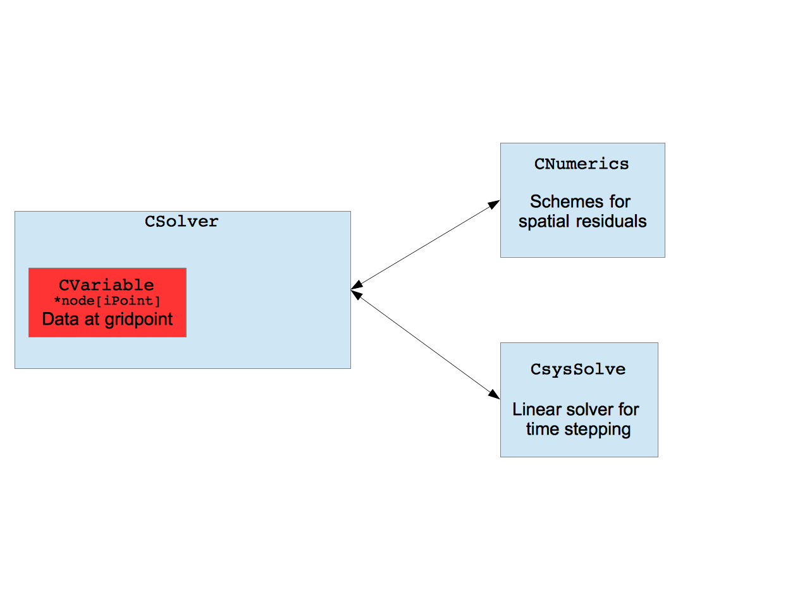

Goal: To familiarize a new SU2 user with the most important data structures and high-level patterns in the code.
Important directories
|
Source files (*.cpp) for CFD solver |
|
|
Header files and inline files (*.hpp, *.inl) |
|
|
Source files (*.cpp) related to config, geometry, and linear solver classes |
|
|
Header files and inline files (*.hpp, *.inl) |
|
Filetype |
What's there |
Example |
|
*.hpp |
Declarations |
|
|
*.inl |
Inline function definitions |
|
|
*.cpp |
Function definitions |
Code entry point: SU2_CFD.cpp
Data structures
The primary data structures in SU2 have several indexes. For example, in SU2_CFD.cpp you will find:
CNumerics *****numerics_container = NULL;
In general, the number of indexes required to access information from this structure is n-1, where n is the number of *s in the declaration. For example, the structure above is addressed using something like:
numerics_container[iZone][iMesh][iSol][iTerm]->DoSomething();
The following chart explains the indexing scheme.
|
Variables or references in code and comments |
Explanation |
|
#ZONES, nZones, iZone |
Indexes the zones in the mesh. The number of zones is set in the config file. The boundary between zones should be specified as a MARKER_INTERFACE |
|
#MG_GRIDS, iMesh |
Indexes each multigrid level. The finest mesh has index 0. |
|
#EQ_SYSTEMS, iSol |
Refers to the different types of equations which can be solve. Typically, you do NOT want to use an explicit integer in this location. Instead, use one of these constants to refer to a particular equation. Examples: FLOW_SOL, TURB_SOL |
|
#EQ_TERMS, iTerm |
Refers to a term of the equation. Again, do NOT use an explicit integer in this location. Instead, use one of these constants. Examples: VISC_TERM, CONV_BOUND_TERM |
With this indexing scheme, the primary data structures are:
output[#ZONES] integration_container[#ZONES][#EQ_SYSTEMS] geometry_container[#ZONES][#MG_GRIDS] solver_container[#ZONES][#MG_GRIDS][#EQ_SYSTEMS] numerics_container[#ZONES][#MG_GRIDS][#EQ_SYSTEMS][#EQ_TERMS] config_container[#ZONES]
Where is the data stored?

A
CSolver class contains an
array called node[]. Each
element of node[] points to a
CVariable class, which
contains data. (Parent
CVariable class.)
Some common patterns
Getting and setting
Looping over edges – Example: Upwind Residual
Looping over points – Example: Source Residual
Access variables from another equation system – Example: Setting TKE
Next: Program call graph